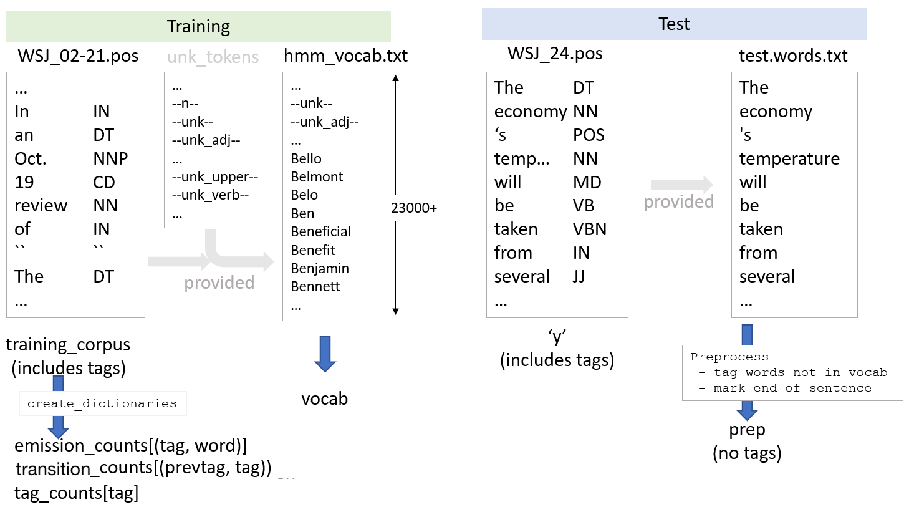
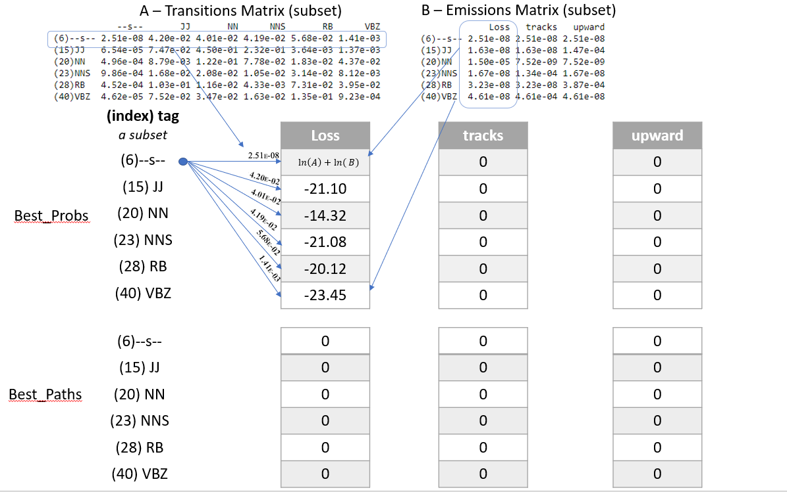
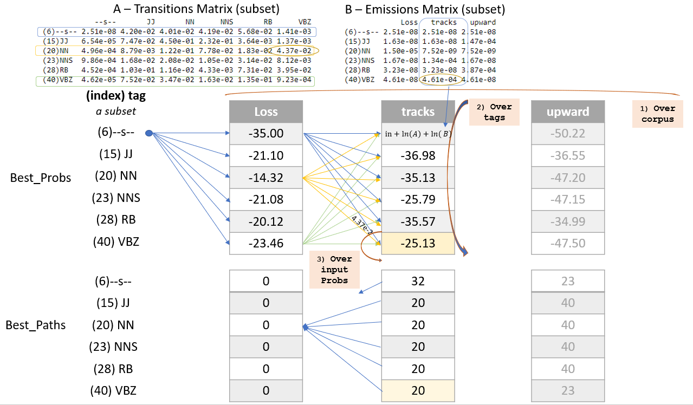

Assignment 2: Parts-of-Speech Tagging (POS)#
Welcome to the second assignment of Course 2 in the Natural Language Processing specialization. This assignment will develop skills in part-of-speech (POS) tagging, the process of assigning a part-of-speech tag (Noun, Verb, Adjective…) to each word in an input text. Tagging is difficult because some words can represent more than one part of speech at different times. They are Ambiguous. Let’s look at the following example:
The whole team played well. [adverb]
You are doing well for yourself. [adjective]
Well, this assignment took me forever to complete. [interjection]
The well is dry. [noun]
Tears were beginning to well in her eyes. [verb]
Distinguishing the parts-of-speech of a word in a sentence will help you better understand the meaning of a sentence. This would be critically important in search queries. Identifying the proper noun, the organization, the stock symbol, or anything similar would greatly improve everything ranging from speech recognition to search. By completing this assignment, you will:
Learn how parts-of-speech tagging works
Compute the transition matrix A in a Hidden Markov Model
Compute the emission matrix B in a Hidden Markov Model
Compute the Viterbi algorithm
Compute the accuracy of your own model
Important Note on Submission to the AutoGrader#
Before submitting your assignment to the AutoGrader, please make sure you are not doing the following:
You have not added any extra
printstatement(s) in the assignment.You have not added any extra code cell(s) in the assignment.
You have not changed any of the function parameters.
You are not using any global variables inside your graded exercises. Unless specifically instructed to do so, please refrain from it and use the local variables instead.
You are not changing the assignment code where it is not required, like creating extra variables.
If you do any of the following, you will get something like, Grader Error: Grader feedback not found (or similarly unexpected) error upon submitting your assignment. Before asking for help/debugging the errors in your assignment, check for these first. If this is the case, and you don’t remember the changes you have made, you can get a fresh copy of the assignment by following these instructions.
Table of Contents#
# Importing packages and loading in the data set
from utils_pos import get_word_tag, preprocess
import pandas as pd
from collections import defaultdict
import math
import numpy as np
import w2_unittest
0 - Data Sources#
This assignment will use two tagged data sets collected from the Wall Street Journal (WSJ).
Here is an example ‘tag-set’ or Part of Speech designation describing the two or three letter tag and their meaning.
One data set (WSJ-2_21.pos) will be used for training.
The other (WSJ-24.pos) for testing.
The tagged training data has been preprocessed to form a vocabulary (hmm_vocab.txt).
The words in the vocabulary are words from the training set that were used two or more times.
The vocabulary is augmented with a set of ‘unknown word tokens’, described below.
The training set will be used to create the emission, transition and tag counts.
The test set (WSJ-24.pos) is read in to create y.
This contains both the test text and the true tag.
The test set has also been preprocessed to remove the tags to form test_words.txt.
This is read in and further processed to identify the end of sentences and handle words not in the vocabulary using functions provided in utils_pos.py.
This forms the list
prep, the preprocessed text used to test our POS taggers.
A POS tagger will necessarily encounter words that are not in its datasets.
To improve accuracy, these words are further analyzed during preprocessing to extract available hints as to their appropriate tag.
For example, the suffix ‘ize’ is a hint that the word is a verb, as in ‘final-ize’ or ‘character-ize’.
A set of unknown-tokens, such as ‘–unk-verb–’ or ‘–unk-noun–’ will replace the unknown words in both the training and test corpus and will appear in the emission, transition and tag data structures.

Implementation note:
For python 3.6 and beyond, dictionaries retain the insertion order.
Furthermore, their hash-based lookup makes them suitable for rapid membership tests.
If di is a dictionary,
key in diwill returnTrueif di has a key key, elseFalse.
The dictionary vocab will utilize these features.
# load in the training corpus
with open("./data/WSJ_02-21.pos", 'r') as f:
training_corpus = f.readlines()
print(f"A few items of the training corpus list")
print(training_corpus[0:5])
A few items of the training corpus list
['In\tIN\n', 'an\tDT\n', 'Oct.\tNNP\n', '19\tCD\n', 'review\tNN\n']
# read the vocabulary data, split by each line of text, and save the list
with open("./data/hmm_vocab.txt", 'r') as f:
voc_l = f.read().split('\n')
print("A few items of the vocabulary list")
print(voc_l[0:50])
print()
print("A few items at the end of the vocabulary list")
print(voc_l[-50:])
-------------------------------------------------------------------------
FileNotFoundError Traceback (most recent call last)
Cell In[3], line 2
1 # read the vocabulary data, split by each line of text, and save the list
----> 2 with open("./data/hmm_vocab.txt", 'r') as f:
3 voc_l = f.read().split('\n')
5 print("A few items of the vocabulary list")
File ~\Python\Lib\site-packages\IPython\core\interactiveshell.py:343, in _modified_open(file, *args, **kwargs)
336 if file in {0, 1, 2}:
337 raise ValueError(
338 f"IPython won't let you open fd={file} by default "
339 "as it is likely to crash IPython. If you know what you are doing, "
340 "you can use builtins' open."
341 )
--> 343 return io_open(file, *args, **kwargs)
FileNotFoundError: [Errno 2] No such file or directory: './data/hmm_vocab.txt'
# vocab: dictionary that has the index of the corresponding words
vocab = {}
# Get the index of the corresponding words.
for i, word in enumerate(sorted(voc_l)):
vocab[word] = i
print("Vocabulary dictionary, key is the word, value is a unique integer")
cnt = 0
for k,v in vocab.items():
print(f"{k}:{v}")
cnt += 1
if cnt > 20:
break
# load in the test corpus
with open("./data/WSJ_24.pos", 'r') as f:
y = f.readlines()
print("A sample of the test corpus")
print(y[0:10])
#corpus without tags, preprocessed
_, prep = preprocess(vocab, "./data/test.words")
print('The length of the preprocessed test corpus: ', len(prep))
print('This is a sample of the test_corpus: ')
print(prep[0:10])
1 - Parts-of-speech Tagging#
1.1 - Training#
You will start with the simplest possible parts-of-speech tagger and we will build up to the state of the art.
In this section, you will find the words that are not ambiguous.
For example, the word
isis a verb and it is not ambiguous.In the
WSJcorpus, \(86\)% of the token are unambiguous (meaning they have only one tag)About \(14\%\) are ambiguous (meaning that they have more than one tag)
Before you start predicting the tags of each word, you will need to compute a few dictionaries that will help you to generate the tables.
Transition counts#
The first dictionary is the
transition_countsdictionary which computes the number of times each tag happened next to another tag.
This dictionary will be used to compute: $\(P(t_i |t_{i-1}) \tag{1}\)$
This is the probability of a tag at position \(i\) given the tag at position \(i-1\).
In order for you to compute equation 1, you will create a transition_counts dictionary where
The keys are
(prev_tag, tag)The values are the number of times those two tags appeared in that order.
Emission counts#
The second dictionary you will compute is the emission_counts dictionary. This dictionary will be used to compute:
In other words, you will use it to compute the probability of a word given its tag.
In order for you to compute equation 2, you will create an emission_counts dictionary where
The keys are
(tag, word)The values are the number of times that pair showed up in your training set.
Tag counts#
The last dictionary you will compute is the tag_counts dictionary.
The key is the tag
The value is the number of times each tag appeared.
Exercise 1 - create_dictionaries#
Instructions: Write a program that takes in the training_corpus and returns the three dictionaries mentioned above transition_counts, emission_counts, and tag_counts.
emission_counts: maps (tag, word) to the number of times it happened.transition_counts: maps (prev_tag, tag) to the number of times it has appeared.tag_counts: maps (tag) to the number of times it has occured.
Implementation note: This routine utilises defaultdict, which is a subclass of dict.
A standard Python dictionary throws a KeyError if you try to access an item with a key that is not currently in the dictionary.
In contrast, the defaultdict will create an item of the type of the argument, in this case an integer with the default value of 0.
See defaultdict.
# UNQ_C1 GRADED FUNCTION: create_dictionaries
def create_dictionaries(training_corpus, vocab, verbose=True):
"""
Input:
training_corpus: a corpus where each line has a word followed by its tag.
vocab: a dictionary where keys are words in vocabulary and value is an index
Output:
emission_counts: a dictionary where the keys are (tag, word) and the values are the counts
transition_counts: a dictionary where the keys are (prev_tag, tag) and the values are the counts
tag_counts: a dictionary where the keys are the tags and the values are the counts
"""
# initialize the dictionaries using defaultdict
emission_counts = defaultdict(int)
transition_counts = defaultdict(int)
tag_counts = defaultdict(int)
# Initialize "prev_tag" (previous tag) with the start state, denoted by '--s--'
prev_tag = '--s--'
# use 'i' to track the line number in the corpus
i = 0
# Each item in the training corpus contains a word and its POS tag
# Go through each word and its tag in the training corpus
for word_tag in training_corpus:
# Increment the word_tag count
i += 1
# Every 50,000 words, print the word count
if i % 50000 == 0 and verbose:
print(f"word count = {i}")
### START CODE HERE ###
# get the word and tag using the get_word_tag helper function (imported from utils_pos.py)
# the function is defined as: get_word_tag(line, vocab)
word, tag = None
# Increment the transition count for the previous word and tag
transition_counts[(prev_tag, tag)] += None
# Increment the emission count for the tag and word
emission_counts[(tag, word)] += None
# Increment the tag count
tag_counts[tag] += None
# Set the previous tag to this tag (for the next iteration of the loop)
prev_tag = None
### END CODE HERE ###
return emission_counts, transition_counts, tag_counts
emission_counts, transition_counts, tag_counts = create_dictionaries(training_corpus, vocab)
# get all the POS states
states = sorted(tag_counts.keys())
print(f"Number of POS tags (number of 'states'): {len(states)}")
print("View these POS tags (states)")
print(states)
Expected Output#
Number of POS tags (number of 'states'46
View these states
['#', '$', "''", '(', ')', ',', '--s--', '.', ':', 'CC', 'CD', 'DT', 'EX', 'FW', 'IN', 'JJ', 'JJR', 'JJS', 'LS', 'MD', 'NN', 'NNP', 'NNPS', 'NNS', 'PDT', 'POS', 'PRP', 'PRP$', 'RB', 'RBR', 'RBS', 'RP', 'SYM', 'TO', 'UH', 'VB', 'VBD', 'VBG', 'VBN', 'VBP', 'VBZ', 'WDT', 'WP', 'WP$', 'WRB', '``']
# Test your function
w2_unittest.test_create_dictionaries(create_dictionaries, training_corpus, vocab)
The ‘states’ are the Parts-of-speech designations found in the training data. They will also be referred to as ‘tags’ or POS in this assignment.
“NN” is noun, singular,
‘NNS’ is noun, plural.
In addition, there are helpful tags like ‘–s–’ which indicate a start of a sentence.
You can get a more complete description at clips/MBSP.
print("transition examples: ")
for ex in list(transition_counts.items())[:3]:
print(ex)
print()
print("emission examples: ")
for ex in list(emission_counts.items())[200:203]:
print (ex)
print()
print("ambiguous word example: ")
for tup,cnt in emission_counts.items():
if tup[1] == 'back': print (tup, cnt)
Expected Output#
transition examples:
(('--s--', 'IN'), 5050)
(('IN', 'DT'), 32364)
(('DT', 'NNP'), 9044)
emission examples:
(('DT', 'any'), 721)
(('NN', 'decrease'), 7)
(('NN', 'insider-trading'), 5)
ambiguous word example:
('RB', 'back') 304
('VB', 'back') 20
('RP', 'back') 84
('JJ', 'back') 25
('NN', 'back') 29
('VBP', 'back') 4
1.2 - Testing#
Now you will test the accuracy of your parts-of-speech tagger using your emission_counts dictionary.
Given your preprocessed test corpus
prep, you will assign a parts-of-speech tag to every word in that corpus.Using the original tagged test corpus
y, you will then compute what percent of the tags you got correct.
Exercise 2 - predict_pos#
Instructions: Implement predict_pos that computes the accuracy of your model.
This is a warm up exercise.
To assign a part of speech to a word, assign the most frequent POS for that word in the training set.
Then evaluate how well this approach works. Each time you predict based on the most frequent POS for the given word, check whether the actual POS of that word is the same. If so, the prediction was correct!
Calculate the accuracy as the number of correct predictions divided by the total number of words for which you predicted the POS tag.
# UNQ_C2 GRADED FUNCTION: predict_pos
def predict_pos(prep, y, emission_counts, vocab, states):
'''
Input:
prep: a preprocessed version of 'y'. A list with the 'word' component of the tuples.
y: a corpus composed of a list of tuples where each tuple consists of (word, POS)
emission_counts: a dictionary where the keys are (tag,word) tuples and the value is the count
vocab: a dictionary where keys are words in vocabulary and value is an index
states: a sorted list of all possible tags for this assignment
Output:
accuracy: Number of times you classified a word correctly
'''
# Initialize the number of correct predictions to zero
num_correct = 0
# Get the (tag, word) tuples, stored as a set
all_words = set(emission_counts.keys())
# Initialize total count to 0
total = 0
for word, y_tup in zip(prep, y):
# Split the (word, POS) string into a list of two items
y_tup_l = y_tup.split()
# Verify that y_tup contain both word and POS
if len(y_tup_l) == 2:
# Set the true POS label for this word
true_label = y_tup_l[1]
else:
# If the y_tup didn't contain word and POS, go to next word
continue
count_final = 0
pos_final = ''
# If the word is in the vocabulary...
if word in vocab:
for pos in states:
### START CODE HERE (Replace instances of 'None' with your code) ###
# define the key as the tuple containing the POS and word
key = None
# check if the (pos, word) key exists in the emission_counts dictionary
if key in None: # Replace None in this line with the proper condition.
# get the emission count of the (pos,word) tuple
count = None
# keep track of the POS with the largest count
if None: # Replace None in this line with the proper condition.
# update the final count (largest count)
count_final = None
# update the final POS
pos_final = None
# If the final POS (with the largest count) matches the true POS:
if None: # Replace None in this line with the proper condition.
# Update the number of correct predictions
num_correct += None
# Keep track of the total number of examples (that have valid labels)
total += 1
### END CODE HERE ###
accuracy = num_correct / total
return accuracy
accuracy_predict_pos = predict_pos(prep, y, emission_counts, vocab, states)
print(f"Accuracy of prediction using predict_pos is {accuracy_predict_pos:.4f}")
Expected Output#
Accuracy of prediction using predict_pos is 0.9253
92.5% is really good for this warm up exercise. With hidden markov models, you should be able to get 95% accuracy.
# Test your function
w2_unittest.test_predict_pos(predict_pos, prep, y, emission_counts, vocab, states)
3 - Viterbi Algorithm and Dynamic Programming#
In this part of the assignment you will implement the Viterbi algorithm which makes use of dynamic programming. Specifically, you will use your two matrices, A and B to compute the Viterbi algorithm. We have decomposed this process into three main steps for you.
Initialization - In this part you initialize the
best_pathsandbest_probabilitiesmatrices that you will be populating infeed_forward.Feed forward - At each step, you calculate the probability of each path happening and the best paths up to that point.
Feed backward: This allows you to find the best path with the highest probabilities.
3.1 - Initialization#
You will start by initializing two matrices of the same dimension.
best_probs: Each cell contains the probability of going from one POS tag to a word in the corpus.
best_paths: A matrix that helps you trace through the best possible path in the corpus.
Exercise 5 - initialize#
Instructions:
Write a program below that initializes the best_probs and the best_paths matrix.
Both matrices will be initialized to zero except for column zero of best_probs.
Column zero of
best_probsis initialized with the assumption that the first word of the corpus was preceded by a start token (”–s–“).This allows you to reference the A matrix for the transition probability
Here is how to initialize column 0 of best_probs:
The probability of the best path going from the start index to a given POS tag indexed by integer \(i\) is denoted by $\(\textrm{best\_probs}[s_{idx}, i]\)$.
This is estimated as the probability that the start tag transitions to the POS denoted by index \(i\): \(\mathbf{A}[s_{idx}, i]\) AND that the POS tag denoted by \(i\) emits the first word of the given corpus, which is $\(\mathbf{B}[i, vocab[corpus[0]]]\)$.
Note that vocab[corpus[0]] refers to the first word of the corpus (the word at position 0 of the corpus).
vocab is a dictionary that returns the unique integer that refers to that particular word.
Conceptually, it looks like this: $\( \textrm{best\_probs}[i, 0] = \mathbf{A}[s_{idx}, i] \times \mathbf{B}[i, vocab[corpus[0]] ] \)$
In order to avoid multiplying and storing small values on the computer, we’ll take the log of the product, which becomes the sum of two logs:
Please use math.log to compute the natural logarithm.
The example below shows the initialization assuming the corpus starts with the phrase “Loss tracks upward”.

# UNQ_C5 GRADED FUNCTION: initialize
def initialize(states, tag_counts, A, B, corpus, vocab):
'''
Input:
states: a list of all possible parts-of-speech
tag_counts: a dictionary mapping each tag to its respective count
A: Transition Matrix of dimension (num_tags, num_tags)
B: Emission Matrix of dimension (num_tags, len(vocab))
corpus: a sequence of words whose POS is to be identified in a list
vocab: a dictionary where keys are words in vocabulary and value is an index
Output:
best_probs: matrix of dimension (num_tags, len(corpus)) of floats
best_paths: matrix of dimension (num_tags, len(corpus)) of integers
'''
# Get the total number of unique POS tags
num_tags = len(tag_counts)
# Initialize best_probs matrix
# POS tags in the rows, number of words in the corpus as the columns
best_probs = np.zeros((num_tags, len(corpus)))
# Initialize best_paths matrix
# POS tags in the rows, number of words in the corpus as columns
best_paths = np.zeros((num_tags, len(corpus)), dtype=int)
# Define the start token
s_idx = states.index("--s--")
### START CODE HERE (Replace instances of 'None' with your code) ###
# Go through each of the POS tags
for i in None: # Replace None in this line with the proper range.
# Initialize best_probs at POS tag 'i', column 0
# Check the formula in the instructions above
best_probs[i,0] = None
### END CODE HERE ###
return best_probs, best_paths
best_probs, best_paths = initialize(states, tag_counts, A, B, prep, vocab)
# Test the function
print(f"best_probs[0,0]: {best_probs[0,0]:.4f}")
print(f"best_paths[2,3]: {best_paths[2,3]:.4f}")
Expected Output#
best_probs[0,0]: -22.6098
best_paths[2,3]: 0.0000
# Test your function
w2_unittest.test_initialize(initialize, states, tag_counts, A, B, prep, vocab)
3.2 - Viterbi Forward#
In this part of the assignment, you will implement the viterbi_forward segment. In other words, you will populate your best_probs and best_paths matrices.
Walk forward through the corpus.
For each word, compute a probability for each possible tag.
Unlike the previous algorithm
predict_pos(the ‘warm-up’ exercise), this will include the path up to that (word,tag) combination.
Here is an example with a three-word corpus “Loss tracks upward”:
Note, in this example, only a subset of states (POS tags) are shown in the diagram below, for easier reading.
In the diagram below, the first word “Loss” is already initialized.
The algorithm will compute a probability for each of the potential tags in the second and future words.
Compute the probability that the tag of the second word (‘tracks’) is a verb, 3rd person singular present (VBZ).
In the
best_probsmatrix, go to the column of the second word (‘tracks’), and row 40 (VBZ), this cell is highlighted in light orange in the diagram below.Examine each of the paths from the tags of the first word (‘Loss’) and choose the most likely path.
An example of the calculation for one of those paths is the path from (‘Loss’, NN) to (‘tracks’, VBZ).
The log of the probability of the path up to and including the first word ‘Loss’ having POS tag NN is \(-14.32\). The
best_probsmatrix contains this value -14.32 in the column for ‘Loss’ and row for ‘NN’.Find the probability that NN transitions to VBZ. To find this probability, go to the
Atransition matrix, and go to the row for ‘NN’ and the column for ‘VBZ’. The value is \(4.37e-02\), which is circled in the diagram, so add \(-14.32 + log(4.37e-02)\).Find the log of the probability that the tag VBS would ‘emit’ the word ‘tracks’. To find this, look at the ‘B’ emission matrix in row ‘VBZ’ and the column for the word ‘tracks’. The value \(4.61e-04\) is circled in the diagram below. So add \(-14.32 + log(4.37e-02) + log(4.61e-04)\).
The sum of \(-14.32 + log(4.37e-02) + log(4.61e-04)\) is \(-25.13\). Store \(-25.13\) in the
best_probsmatrix at row ‘VBZ’ and column ‘tracks’ (as seen in the cell that is highlighted in light orange in the diagram).All other paths in best_probs are calculated. Notice that \(-25.13\) is greater than all of the other values in column ‘tracks’ of matrix
best_probs, and so the most likely path to ‘VBZ’ is from ‘NN’. ‘NN’ is in row 20 of thebest_probsmatrix, so \(20\) is the most likely path.Store the most likely path \(20\) in the
best_pathstable. This is highlighted in light orange in the diagram below.
The formula to compute the probability and path for the \(i^{th}\) word in the \(corpus\), the prior word \(i-1\) in the corpus, current POS tag \(j\), and previous POS tag \(k\) is:
\(\mathrm{prob} = \mathbf{best\_prob}_{k, i-1} + \mathrm{log}(\mathbf{A}_{k, j}) + \mathrm{log}(\mathbf{B}_{j, vocab(corpus_{i})})\)
where \(corpus_{i}\) is the word in the corpus at index \(i\), and \(vocab\) is the dictionary that gets the unique integer that represents a given word.
\(\mathrm{path} = k\)
where \(k\) is the integer representing the previous POS tag.
Exercise 6 - viterbi_forward#
Instructions: Implement the viterbi_forward algorithm and store the best_path and best_prob for every possible tag for each word in the matrices best_probs and best_tags using the pseudo code below.
for each word in the corpus
for each POS tag type that this word may be
for POS tag type that the previous word could be
compute the probability that the previous word had a given POS tag, that the current word has a given POS tag, and that the POS tag would emit this current word.
retain the highest probability computed for the current word
set best_probs to this highest probability
set best_paths to the index 'k', representing the POS tag of the previous word which produced the highest probability
Please use math.log to compute the natural logarithm.

Hints
- Remember that when accessing emission matrix B, the column index is the unique integer ID associated with the word. It can be accessed by using the 'vocab' dictionary, where the key is the word, and the value is the unique integer ID for that word.
# UNQ_C6 GRADED FUNCTION: viterbi_forward
def viterbi_forward(A, B, test_corpus, best_probs, best_paths, vocab, verbose=True):
'''
Input:
A, B: The transition and emission matrices respectively
test_corpus: a list containing a preprocessed corpus
best_probs: an initilized matrix of dimension (num_tags, len(corpus))
best_paths: an initilized matrix of dimension (num_tags, len(corpus))
vocab: a dictionary where keys are words in vocabulary and value is an index
Output:
best_probs: a completed matrix of dimension (num_tags, len(corpus))
best_paths: a completed matrix of dimension (num_tags, len(corpus))
'''
# Get the number of unique POS tags (which is the num of rows in best_probs)
num_tags = best_probs.shape[0]
# Go through every word in the corpus starting from word 1
# Recall that word 0 was initialized in `initialize()`
for i in range(1, len(test_corpus)):
# Print number of words processed, every 5000 words
if i % 5000 == 0 and verbose:
print("Words processed: {:>8}".format(i))
### START CODE HERE (Replace instances of 'None' with your code EXCEPT the first 'best_path_i = None') ###
# For each unique POS tag that the current word can be
for j in None: # Replace None in this line with the proper range. # for every pos tag
# Initialize best_prob for word i to negative infinity
best_prob_i = float("-inf")
# Initialize best_path for current word i to None
best_path_i = None # Do not replace this None # @KEEPTHIS
# For each POS tag that the previous word can be:
for k in None: # Replace None in this line with the proper range.
# Calculate the probability = None
# best probs of POS tag k, previous word i-1 +
# log(prob of transition from POS k to POS j) +
# log(prob that emission of POS j is word i)
prob = None
# check if this path's probability is greater than
# the best probability up to and before this point
if None: # Replace None in this line with the proper condition.
# Keep track of the best probability
best_prob_i = None
# keep track of the POS tag of the previous word
# that is part of the best path.
# Save the index (integer) associated with
# that previous word's POS tag
best_path_i = None
# Save the best probability for the
# given current word's POS tag
# and the position of the current word inside the corpus
best_probs[j,i] = None
# Save the unique integer ID of the previous POS tag
# into best_paths matrix, for the POS tag of the current word
# and the position of the current word inside the corpus.
best_paths[j,i] = None
### END CODE HERE ###
return best_probs, best_paths
Run the viterbi_forward function to fill in the best_probs and best_paths matrices.
Note that this will take a few minutes to run. There are about 30,000 words to process.
# this will take a few minutes to run => processes ~ 30,000 words
best_probs, best_paths = viterbi_forward(A, B, prep, best_probs, best_paths, vocab)
# Test this function
print(f"best_probs[0,1]: {best_probs[0,1]:.4f}")
print(f"best_probs[0,4]: {best_probs[0,4]:.4f}")
Expected Output#
best_probs[0,1]: -24.7822
best_probs[0,4]: -49.5601
# Test your function: this test may take some time to run
w2_unittest.test_viterbi_forward(viterbi_forward, A, B, prep, vocab)
3.3 - Viterbi Backward#
Now you will implement the Viterbi backward algorithm.
The Viterbi backward algorithm gets the predictions of the POS tags for each word in the corpus using the
best_pathsand thebest_probsmatrices.
The example below shows how to walk backwards through the best_paths matrix to get the POS tags of each word in the corpus. Recall that this example corpus has three words: “Loss tracks upward”.
POS tag for ‘upward’ is RB
Select the the most likely POS tag for the last word in the corpus, ‘upward’ in the
best_probtable.Look for the row in the column for ‘upward’ that has the largest probability.
Notice that in row 28 of
best_probs, the estimated probability is -34.99, which is larger than the other values in the column. So the most likely POS tag for ‘upward’ isRBan adverb, at row 28 ofbest_prob.The variable
zis an array that stores the unique integer ID of the predicted POS tags for each word in the corpus. In array z, at position 2, store the value 28 to indicate that the word ‘upward’ (at index 2 in the corpus), most likely has the POS tag associated with unique ID 28 (which isRB).The variable
predcontains the POS tags in string form. Sopredat index 2 stores the stringRB.
POS tag for ‘tracks’ is VBZ
The next step is to go backward one word in the corpus (‘tracks’). Since the most likely POS tag for ‘upward’ is
RB, which is uniquely identified by integer ID 28, go to thebest_pathsmatrix in column 2, row 28. The value stored inbest_paths, column 2, row 28 indicates the unique ID of the POS tag of the previous word. In this case, the value stored here is 40, which is the unique ID for POS tagVBZ(verb, 3rd person singular present).So the previous word at index 1 of the corpus (‘tracks’), most likely has the POS tag with unique ID 40, which is
VBZ.In array
z, store the value 40 at position 1, and for arraypred, store the stringVBZto indicate that the word ‘tracks’ most likely has POS tagVBZ.
POS tag for ‘Loss’ is NN
In
best_pathsat column 1, the unique ID stored at row 40 is 20. 20 is the unique ID for POS tagNN.In array
zat position 0, store 20. In arraypredat position 0, storeNN.

Exercise 7 - viterbi_backward#
Implement the viterbi_backward algorithm, which returns a list of predicted POS tags for each word in the corpus.
Note that the numbering of the index positions starts at 0 and not 1.
mis the number of words in the corpus.So the indexing into the corpus goes from
0tom - 1.Also, the columns in
best_probsandbest_pathsare indexed from0tom - 1
In Step 1:
Loop through all the rows (POS tags) in the last entry of best_probs and find the row (POS tag) with the maximum value.
Convert the unique integer ID to a tag (a string representation) using the list states.
Referring to the three-word corpus described above:
z[2] = 28: For the word ‘upward’ at position 2 in the corpus, the POS tag ID is 28. Store 28 inzat position 2.states[28]is ‘RB’: The POS tag ID 28 refers to the POS tag ‘RB’.pred[2] = 'RB': In arraypred, store the POS tag for the word ‘upward’.
In Step 2:
Starting at the last column of best_paths, use
best_probsto find the most likely POS tag for the last word in the corpus.Then use
best_pathsto find the most likely POS tag for the previous word.Update the POS tag for each word in
zand inpreds.
Referring to the three-word example from above, read best_paths at column 2 and fill in z at position 1.
z[1] = best_paths[z[2],2]
The small test following the routine prints the last few words of the corpus and their states to aid in debug.
# UNQ_C7 GRADED FUNCTION: viterbi_backward
def viterbi_backward(best_probs, best_paths, corpus, states):
'''
This function returns the best path.
'''
# Get the number of words in the corpus
# which is also the number of columns in best_probs, best_paths
m = best_paths.shape[1]
# Initialize array z, same length as the corpus
z = [None] * m # DO NOT replace the "None"
# Get the number of unique POS tags
num_tags = best_probs.shape[0]
# Initialize the best probability for the last word
best_prob_for_last_word = float('-inf')
# Initialize pred array, same length as corpus
pred = [None] * m # DO NOT replace the "None"
### START CODE HERE (Replace instances of 'None' with your code) ###
## Step 1 ##
# Go through each POS tag for the last word (last column of best_probs)
# in order to find the row (POS tag integer ID)
# with highest probability for the last word
for k in None: # Replace None in this line with the proper range.
# If the probability of POS tag at row k
# is better than the previously best probability for the last word:
if None: # Replace None in this line with the proper condition.
# Store the new best probability for the last word
best_prob_for_last_word = None
# Store the unique integer ID of the POS tag
# which is also the row number in best_probs
z[m - 1] = None
# Convert the last word's predicted POS tag
# from its unique integer ID into the string representation
# using the 'states' list
# store this in the 'pred' array for the last word
pred[m - 1] = None
## Step 2 ##
# Find the best POS tags by walking backward through the best_paths
# From the last word in the corpus to the 0th word in the corpus
for i in range(None, None, None): # Replace None in this line with the proper range.
# Retrieve the unique integer ID of
# the POS tag for the word at position 'i' in the corpus
pos_tag_for_word_i = None
# In best_paths, go to the row representing the POS tag of word i
# and the column representing the word's position in the corpus
# to retrieve the predicted POS for the word at position i-1 in the corpus
z[i - 1] = None
# Get the previous word's POS tag in string form
# Use the 'states' list,
# where the key is the unique integer ID of the POS tag,
# and the value is the string representation of that POS tag
pred[i - 1] = None
### END CODE HERE ###
return pred
# Run and test your function
pred = viterbi_backward(best_probs, best_paths, prep, states)
m=len(pred)
print('The prediction for pred[-7:m-1] is: \n', prep[-7:m-1], "\n", pred[-7:m-1], "\n")
print('The prediction for pred[0:8] is: \n', pred[0:7], "\n", prep[0:7])
Expected Output:
The prediction for pred[-7:m-1] is:
['see', 'them', 'here', 'with', 'us', '.']
['VB', 'PRP', 'RB', 'IN', 'PRP', '.']
The prediction for pred[0:8] is:
['DT', 'NN', 'POS', 'NN', 'MD', 'VB', 'VBN']
['The', 'economy', "'s", 'temperature', 'will', 'be', 'taken']
Now you just have to compare the predicted labels to the true labels to evaluate your model on the accuracy metric!
# Test your function
w2_unittest.test_viterbi_backward(viterbi_backward, prep, states)
4 - Predicting on a Dataset#
Compute the accuracy of your prediction by comparing it with the true y labels.
predis a list of predicted POS tags corresponding to the words of thetest_corpus.
print('The third word is:', prep[3])
print('Your prediction is:', pred[3])
print('Your corresponding label y is: ', y[3])
Exercise 8 - compute_accuracy#
Implement a function to compute the accuracy of the viterbi algorithm’s POS tag predictions.
To split y into the word and its tag you can use
y.split().
# UNQ_C8 GRADED FUNCTION: compute_accuracy
def compute_accuracy(pred, y):
'''
Input:
pred: a list of the predicted parts-of-speech
y: a list of lines where each word is separated by a '\t' (i.e. word \t tag)
Output:
'''
num_correct = 0
total = 0
# Zip together the prediction and the labels
for prediction, y in zip(pred, y):
### START CODE HERE (Replace instances of 'None' with your code) ###
# Split the label into the word and the POS tag
word_tag_tuple = None
# Check that there is actually a word and a tag
# no more and no less than 2 items
if None: # Replace None in this line with the proper condition.
continue
# store the word and tag separately
word, tag = None
# Check if the POS tag label matches the prediction
if None: # Replace None in this line with the proper condition.
# count the number of times that the prediction
# and label match
num_correct += None
# keep track of the total number of examples (that have valid labels)
total += None
### END CODE HERE ###
return num_correct/total
print(f"Accuracy of the Viterbi algorithm is {compute_accuracy(pred, y):.4f}")
Expected Output#
Accuracy of the Viterbi algorithm is 0.9531
Congratulations you were able to classify the parts-of-speech with 95% accuracy.
# Test your function
w2_unittest.test_compute_accuracy(compute_accuracy, pred, y)
Key Points and overview#
In this assignment you learned about parts-of-speech tagging.
In this assignment, you predicted POS tags by walking forward through a corpus and knowing the previous word.
There are other implementations that use bidirectional POS tagging.
Bidirectional POS tagging requires knowing the previous word and the next word in the corpus when predicting the current word’s POS tag.
Bidirectional POS tagging would tell you more about the POS instead of just knowing the previous word.
Since you have learned to implement the unidirectional approach, you have the foundation to implement other POS taggers used in industry.
References#
“Speech and Language Processing”, Dan Jurafsky and James H. Martin
We would like to thank Melanie Tosik for her help and inspiration